| Section | What we'll cover |
|---|---|
| 1 · The Leader's Dilemma | Why open trade needs rules to survive domestic politics |
| 2 · What Is the WTO? | Principles, the legal nuts and bolts, S&DT, dispute settlement |
| 3 · Who Pays for Open Trade? | Hegemonic stability and the public-goods problem |
| 4 · The System Under Pressure | Doha stalemate, regional trade agreements, values clash |
| 5 · What the WTO Made Possible | Global value chains — from Toyota to ASML |
| 6 · Article presentation (instructor models) | Today's Reading 2 article — see modeled structure |
| 7 · Writing & Discussion | Apply the framework to a current case |
The WTO and the World Trade System
INTL 503 | Chapter 2
Professor Sarah Bauerle Danzman
July 7, 2026
Today’s Plan
Today’s Big Question
How did the world build a rules-based system to keep markets open — and what has that system made possible?
The Empirical Background
Trade Has Been Transformed - Because of the Post-War, U.S.-led System
Bigger
$84B → $25T
World merchandise trade, 1953 → 2022. Roughly 6% annual growth — consistently outpacing GDP across the same period.
Different geography
<1% → ~15%
China’s share of world exports, 1980 → today. Emerging markets now account for nearly half of world trade — a fundamental shift in system structure.
Qualitatively complex
~55% intermediates
Trade is no longer “wine for cloth.” More than half of world trade is now in components, parts, and semi-finished goods crossing borders multiple times.
Economic globalization occurs because international rules create clear and reliable rules. Trade at this scale and complexity depends on the certainty that components won’t be arbitrarily blocked at borders or tariff rates suddenly changed. Rapid economic development through export-led growth (like China) requires that other countries open their borders to your goods.
The Leader’s Dilemma
A Reminder from Day 1
Why governments need external rules
Every tariff redistributes income — few winners with big gains, many losers with small costs. Concentrated, organized interests outweigh diffuse, unorganized majorities: this is a collective action failure (Olson, 1965).
Governments need external rules — and a mechanism to enforce them — to keep prevent cheating. The WTO exists to set expectations for behavior, lower transaction costs to negotiating agreements, make clear when countries are abided by or evading their commitments, and to bind their hands.
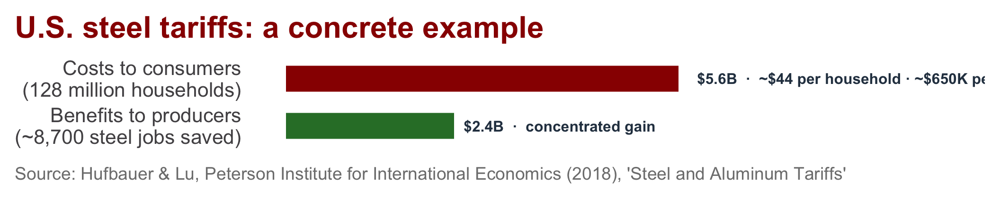
What Happens Without Rules
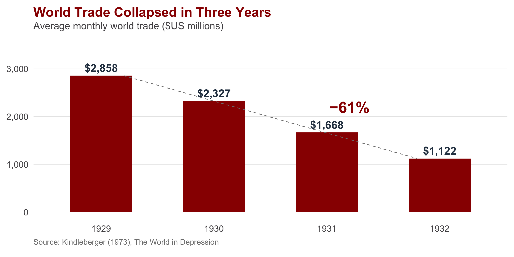
What Is the WTO?
The WTO at a Glance
Founded 1995 (replacing GATT, 1947–94)
Geneva, Switzerland
166 members
~625 staff
~$240M / yr
CHF 215M (2025 budget)
≈ The Marvels (2023): ~$270M
A $25 trillion trading system, run on roughly the cost of one Marvel movie.
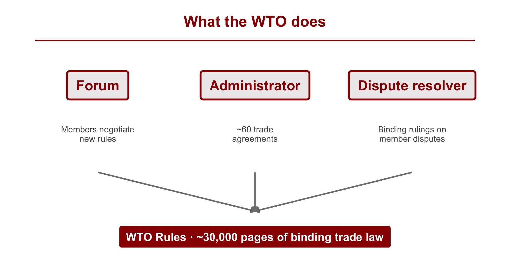
For the full institutional structure (Ministerial Conference, General Council, councils, committees), see the WTO organization chart.
Three Foundational Principles
Market Liberalism
- Open trade raises the world’s standard of living. Gains are greatest when goods flow freely across borders
- Does not imply tariffs are never acceptable, but that they should be exception
Based on the logic of comparative advantage (Ch. 3).
Nondiscrimination
Every WTO member faces identical trading opportunities with every other member.
- Most Favored Nation (MFN) — cut a tariff for one, cut it for all
- National treatment — foreign goods, once admitted, treated like domestic
Special & Differential Treatment
Developing countries get non-reciprocal access and better-than-MFN tariffs from richer members.
- Treaty basis: GATT Part IV (1965) + the Enabling Clause (1979)
- Lets developing countries join without matching concession-for-concession
Bound Tariffs — The Legal Architecture
Each WTO member commits — for every tariff line — to a bound rate: a legal ceiling it cannot exceed without renegotiating. The rate it actually charges (the applied rate) can be lower. Developing countries often have high bound + low applied rates — giving themselves policy space to raise tariffs without violating WTO commitments.
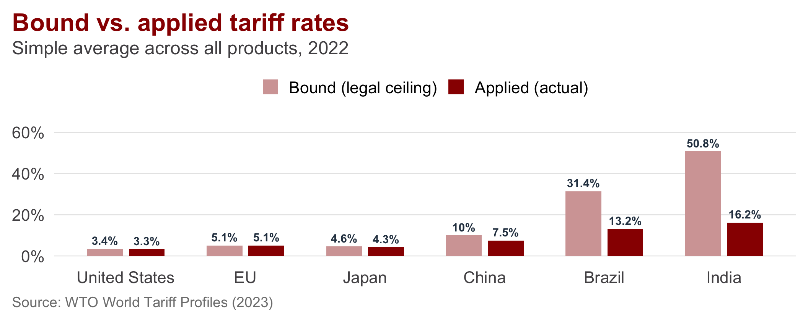
Safeguards & Trade Remedies
The WTO allows members to temporarily exceed bound tariffs in three specific cases — built-in escape valves so that governments can address domestic political issues without breaking the system.
Safeguards
GATT Art. XIX + Safeguards Agreement (1994)
Temporary, non-discriminatory tariff increases when imports cause serious injury to a domestic industry. Must compensate affected exporters — or they may retaliate.
Antidumping (AD)
GATT Art. VI + AD Agreement
Targeted tariffs against specific firms / countries selling below “fair value” in your market. The most-used trade remedy globally.
Countervailing duties (CVD)
SCM Agreement
Targeted tariffs against imports benefiting from foreign government subsidies. Often paired with antidumping.
Non-Market Economy treatment
When a country is designated a non-market economy (NME) — most prominently China — importers can use a different methodology to calculate AD and CVD duties: surrogate country prices instead of the NME’s own (which are seen as distorted by state intervention). This typically produces substantially higher duties. China accepted NME status until 2016 at WTO accession; the U.S. and EU continue NME treatment despite Beijing’s objections — and Beijing has filed WTO complaints in return. Technically MFN-compliant; functionally targets specific rivals.
Reciprocity in Negotiations
The request–offer process. Country A asks Country B for a tariff cut on a specific product. Negotiation proceeds in pairs — but the result is bound at the MFN level: it applies to every WTO member.
Principal supplier rule. Negotiate with whoever supplies the most of that product to your market. Other suppliers benefit automatically via MFN.
Balance of concessions. Negotiators measure “reciprocity” as roughly trade flows × tariff cut × elasticity. The math is approximate, but the idea helps negotiators perform competency to their constituencies: what we got for what we gave.
A Hypothetical U.S.-Brazil Example
① Request (U.S. → Brazil): “Cut your soybean tariff: 35% → 10%.”
② Offer (Brazil → U.S.): “15% — but you cut your beef tariff: 25% → 8%.”
③ Settlement: Brazil binds soybeans at 12%. U.S. binds beef at 9%.
By MFN, both new rates now apply to all 166 WTO members.
Two negotiating modes: item-by-item (Geneva, Annecy, Torquay — one tariff line at a time) and linear formula (Kennedy Round onward — blanket % cuts across thousands of lines). Most modern rounds use a hybrid: formula cuts plus item-by-item carve-outs for politically sensitive sectors.
A Real Example: China’s WTO Accession (2001)
15 years of negotiation (1986–2001). The U.S. led the bilateral talks; China’s accession protocol included hundreds of specific tariff bindings plus services, IP, and rule commitments.
Selected items from China’s tariff schedule
| Product | Pre-WTO tariff | Bound rate |
|---|---|---|
| Automobiles | 80–100% | **25%** (by 2006) |
| Auto parts | 50% | **10%** (by 2006) |
| IT products | ~13% avg | **0%** (via ITA) |
| Beef | 45% | **12%** |
| Wine | 65% | **14%** (by 2006) |
| Wheat | 114% | **1%** in-quota TRQ |
What the U.S. gave (and didn’t)
- PNTR — converted conditional MFN to permanent, ending the annual Congressional vote
- No new tariff cuts — U.S. simply applied existing Uruguay Round bound rates to Chinese imports
- Retained tools: China-specific safeguard (12 yrs) + NME treatment in AD/CVD (15 yrs)
Why the U.S. led: as the largest export market for China, followed principal supplier rule.
Once bound, China’s new tariff rates applied to all 142 other WTO members at the time — Brazil, EU, Japan, India, etc. — through MFN. A bilateral deal became a multilateral commitment in one step.
The Bargaining Rounds
| Round | Year | Subjects covered | Members |
|---|---|---|---|
| Geneva | 1947 | Tariffs | 23 |
| Annecy | 1949 | Tariffs | 13 |
| Torquay | 1951 | Tariffs | 38 |
| Geneva | 1956 | Tariffs | 26 |
| Dillon | 1960–1961 | Tariffs | 26 |
| Kennedy | 1964–1967 | Tariffs, antidumping | 62 |
| Tokyo | 1973–1979 | Tariffs, NTBs, framework agreements | 102 |
| Uruguay | 1986–1994 | Tariffs, NTBs, services, IP, dispute settlement, agriculture, textiles | 123 |
| Doha | 2001–2015 | Agriculture, services, IP, S&DT for developing countries — *no overarching agreement* | 147+ |
1 · More members
23 (1947) → 147+ (Doha)
2 · Rounds take longer
1 yr (early) → 8 yrs (Uruguay) → 14 yrs (Doha, unfinished)
3 · Subjects expand
Tariffs only → tariffs + NTBs + services + IP + agriculture
Source: Oatley, International Political Economy, Table 2.1.
Discussion: What Does It Take to Be a Trade Negotiator?
Today’s Podcast
Trade Talks, Ep. 34 — “So You Want to Be a Trade Negotiator” (Bown & Keynes, with Wendy Cutler, former Acting Deputy USTR)
Discuss with a partner
What agentic factors does Wendy Cutler raise as important for understanding how trade negotiations actually happen — beyond the structural forces (power, institutions, domestic politics) we’ve been discussing today?
A few minutes with a partner, then we’ll share out.
Beyond Tariffs: Non-Tariff Barriers
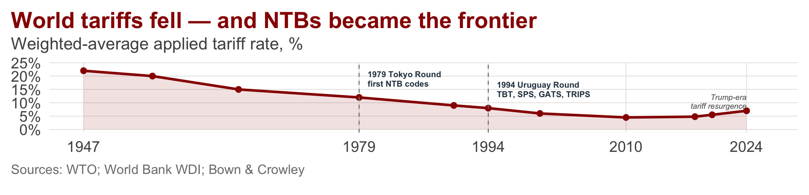
Why NTBs matter
As average tariffs fell from ~22% to ~5%, non-tariff barriers became the dominant focus of negotiation.
NTBs are politically harder than tariffs because they often have legitimate regulatory purposes — food safety, environment, consumer protection, IP.
The challenge: distinguishing genuine regulation from disguised protectionism.
Major NTB agreements (all 1994 unless noted)
- TBT — Technical Barriers to Trade (standards, labeling)
- SPS — Sanitary & Phytosanitary measures (food safety, animal/plant health)
- GATS — General Agreement on Trade in Services
- TRIPS — Trade-Related Aspects of IP Rights
- SCM — Subsidies & Countervailing Measures
- AoA — Agreement on Agriculture
How Developing Countries Get Special Treatment
Three instruments build the Special and Differential Treatment system:
GATT Part IV (1965, Arts. XXXVI–XXXVIII) — codifies non-reciprocity: developing countries are not expected to match concession-for-concession in trade rounds.
The Enabling Clause (1979) — a permanent exception to MFN. It is the legal basis for the Generalized System of Preferences (GSP): developed countries may grant better-than-MFN tariffs to designated developing countries.
S&DT provisions — embedded in most WTO agreements: longer phase-in periods, lower commitments, technical assistance, weaker enforcement triggers.
Who counts as “developing”?
The WTO has no formal definition. Members self-designate.
Graduation is decided unilaterally by the granting country:
- U.S. graduated Korea, Singapore, Taiwan, Hong Kong from GSP in 1989.
- China still self-designates as “developing” despite being the world’s #2 economy — one of the big controversies in the WTO today.
Dispute Settlement
The WTO’s biggest innovation
GATT: Any party could block a ruling.
WTO: Rulings adopted unless all members reject.
Since 1995: 600+ disputes filed.
Major cases: U.S. steel tariffs, EU GMO ban, Boeing-Airbus subsidies.
⚠ The crisis
The Appellate Body has been paralyzed since December 2019. The U.S. has blocked new appointments since 2017. Appeals now go into a void — the most important institutional crisis in the WTO today.
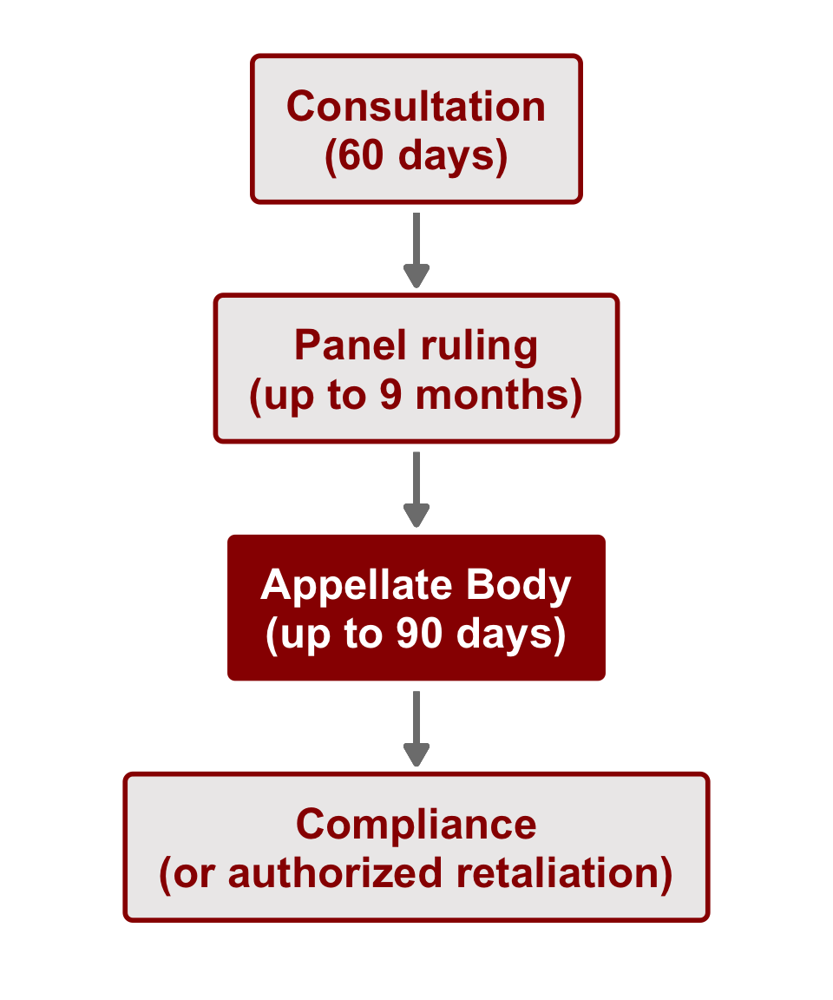
Coming up: we’ll examine dispute settlement in greater detail in Chapter 3 — actual cases, compliance rates, and how the system works in practice.
Who Pays for Open Trade?
The Public Goods Problem
Public Good
A good that is non-excludable (no one can be prevented from enjoying it) and non-rival (one person’s use doesn’t reduce availability for others). Classic example: a lighthouse.
Free Riding
Actors benefit from a public good without paying their share of the cost of providing it. The temptation is greatest in large groups — where any one actor’s contribution feels negligible.
The open trading system is a public good. All governments benefit from stable rules and open markets — whether they contributed to building those rules or not.
So who pays? Everyone wants the system to exist; no one wants to bear the cost. In large groups, the free-rider problem is usually fatal.
Hegemonic Stability Theory
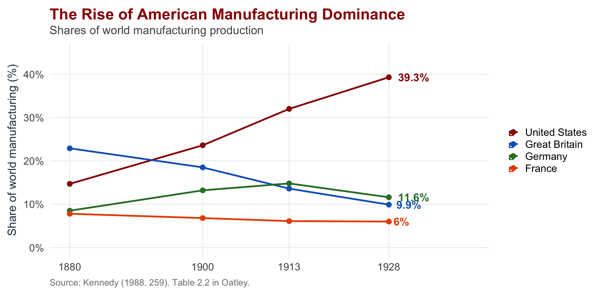
The Hegemonic Decline Puzzle
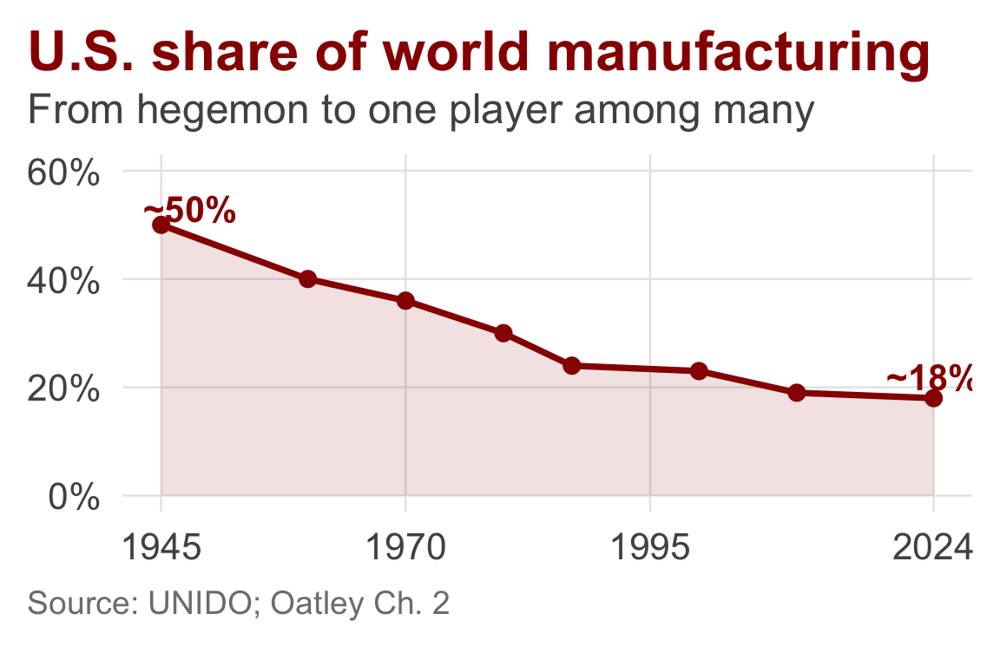
The puzzle
The U.S. built the GATT/WTO when it produced ~50% of the world’s manufactured goods. Today it produces ~18%.
Yet the WTO is still here (kind of).
So either:
- the system is in the process of collapse (this seems to be the Trump administration’s preference), or
- institutions, once built, have staying power independent of the hegemon’s relative strength. (Carney is attempting to unite middle powers in keeping the trade system alive even without the U.S.), or
- China, once more solidly dominant, will create a new system fashioned to its preferences
Which one is it?
The System Under Pressure
Why No New Deal Since 1994?
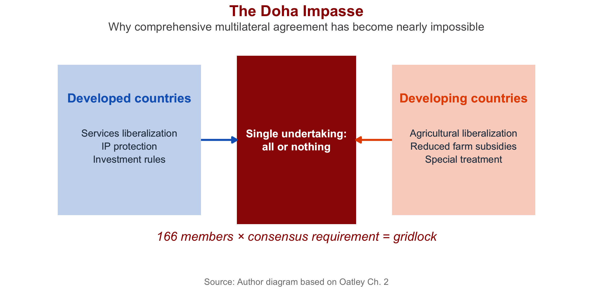
The Regional Alternative
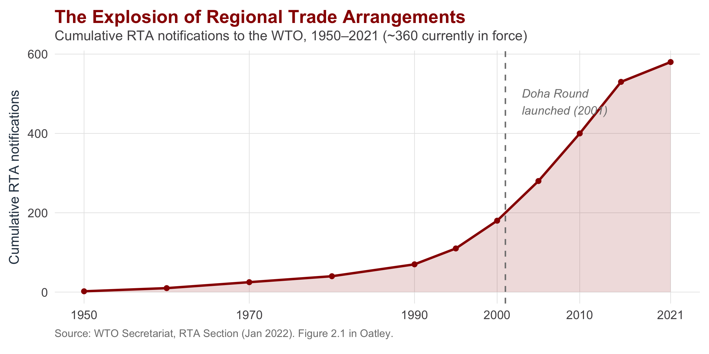
RTAs: Two Debates
Two welfare effects
Trade creation — RTA members shift from inefficient domestic producers to more efficient RTA partner producers as tariffs come down. Welfare gain.
Trade diversion — RTA members shift from efficient non-member producers to less efficient RTA partner producers because of tariff preferences. Welfare loss.
The net effect is empirical — and contested.
Two systemic effects
Building blocs — RTAs deepen liberalization in smaller groups; the gains then spread multilaterally. NAFTA pioneered services and IP rules that diffused outward.
Stumbling blocs — RTAs are inherently discriminatory. As they multiply, governments lose appetite for the harder multilateral route. The system fragments.
Oatley leaves it open. Empirics: mixed.
Trade, Values, and the WTO’s Limits
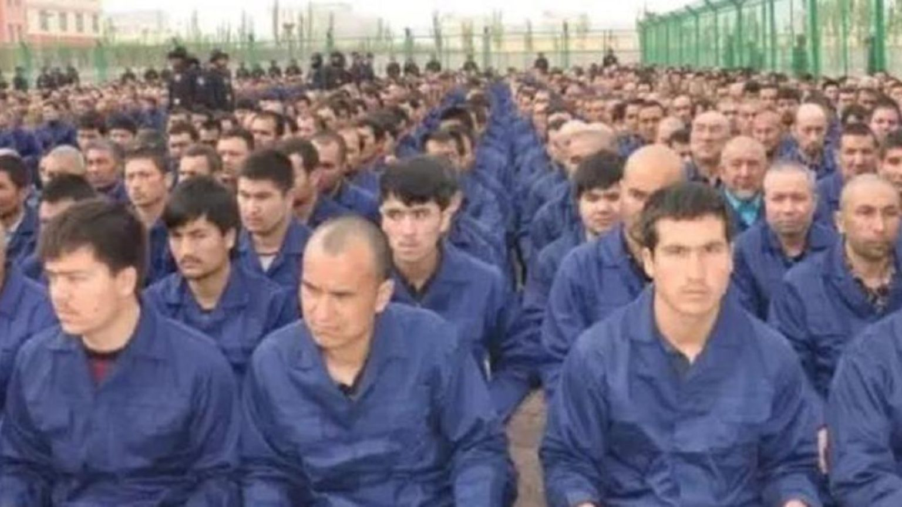
A reported forced-labor facility in Xinjiang.
The Uyghur case. China’s treatment of its Uyghur minority — forced labor in cotton, apparel, and electronics.
U.S. response. The Uyghur Forced Labor Prevention Act (2021) bans imports from Xinjiang unless companies prove no forced labor was involved.
Inherently discriminatory under WTO rules.
The Growing Tension
The WTO was designed to regulate tariffs and quotas. Trade policy increasingly intersects with values — labor rights, environment, human rights — that the original system wasn’t built to handle.
What the WTO Made Possible
From Finished Goods to Global Value Chains
The Transformation
The rules-based trading system didn’t just increase the volume of trade. It enabled a fundamental shift in how goods are produced.
Then: Toyota made cars in Japan. Exported finished vehicles.
Now: Toyota sources components from producers worldwide, ships them to plants in roughly 28 countries.
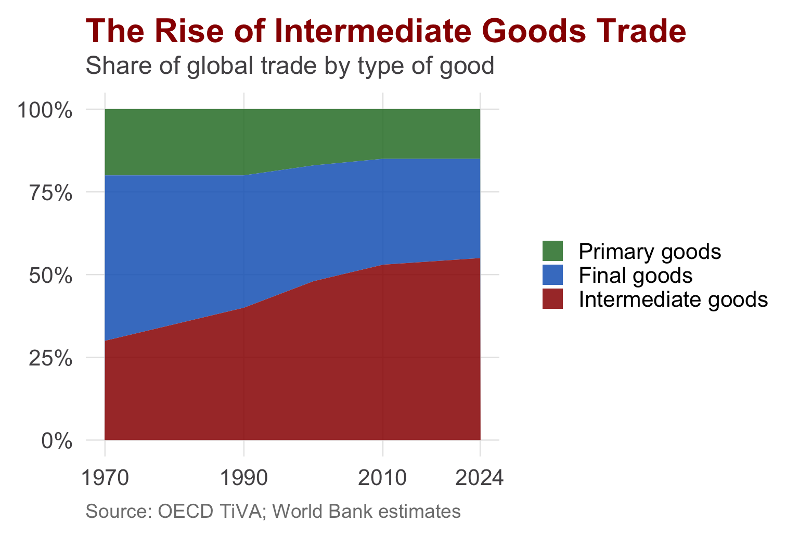
Nutella: One Product, Seven Countries
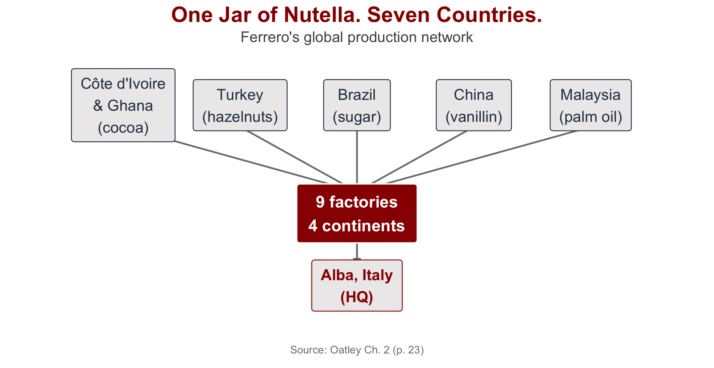
How National Economies Have Transformed
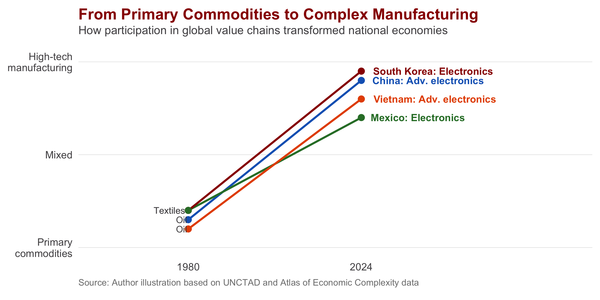
ASML’s EUV Machine: The Pinnacle
The most complex machine ever built.
- Cost: ~$220 million per unit (standard EUV); $380M+ for new High-NA
- Weight: 180 tons
- Suppliers: ~5,000 across dozens of countries
- The only machine that can print the most advanced chips
No Single Country Could Build This
Mirrors polished to sub-nanometer precision. Plasma at 500,000°C. This machine is a product of the rules-based trading system.
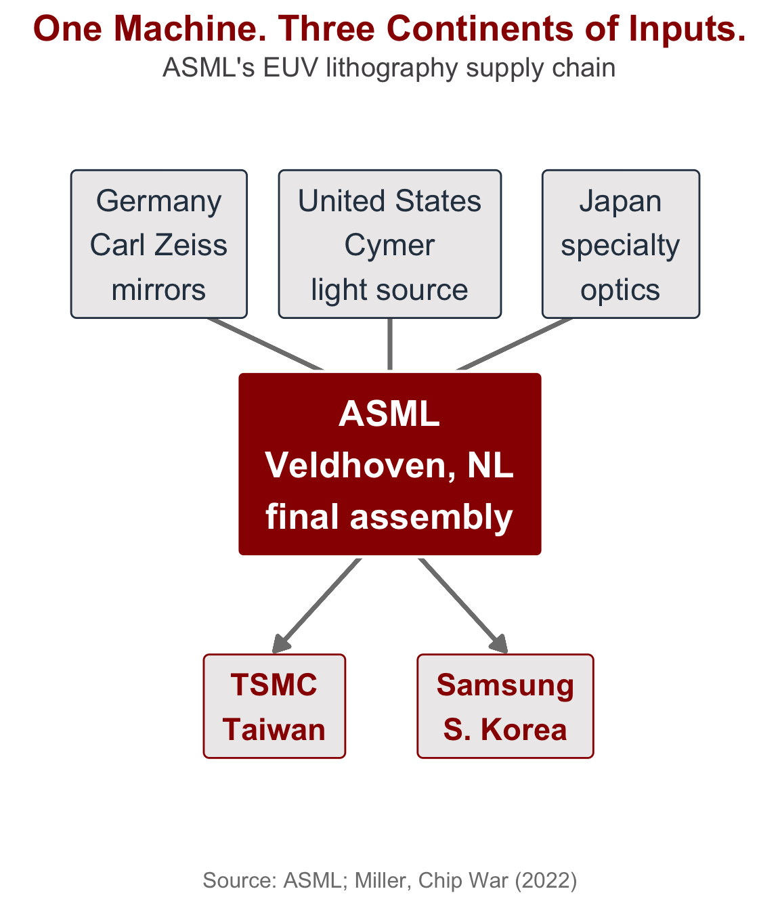
The Machine Itself
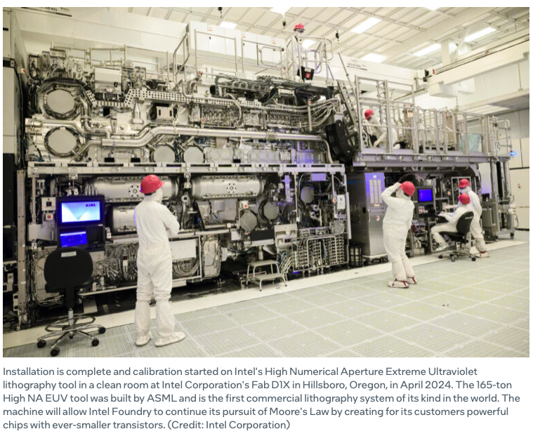
Installation and calibration of Intel’s High-NA EUV lithography tool, Fab D1X, Hillsboro, Oregon — April 2024. Built by ASML; 165 tons. (Credit: Intel Corporation)
When the System Fractures
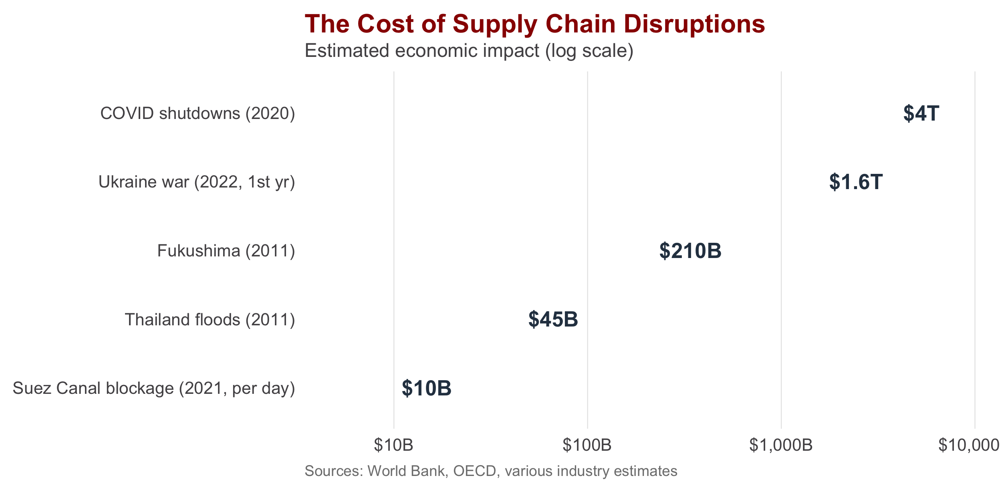
Article Presentation
Article Presentation: Instructor Models
Today’s article:
Rickard, Stephanie J. (2025). “International negotiations over the global commons.” Review of International Organizations 20: 999–1021.
What I’ll cover in this segment (~15–20 min):
- The article’s central claim in one sentence
- The evidence — what data, what method, what cases?
- The implications for trade cooperation, which the the focus of today’s chapter.
- 2–3 discussion questions for the class
Modeling Structure of the Presentation
This is the model for your article presentation. Notice:
- How I frame the claim before getting into evidence
- How I link the article to the central course material
- How my discussion questions invite analysis, not just summary
Rickard (2025): Article Overview
The Case
The WTO’s Agreement on Fisheries Subsidies (AFS) — the first WTO treaty to explicitly target the environmental impact of trade policy. A hard case by design: fisheries are a common-pool resource, so no single country can fix overfishing by acting alone.
| Element | Rickard (2025) |
|---|---|
| Puzzle | How do middle powers, small states, and Global South countries shape new agreements on divisive, emerging issues like trade-and-environment — when conventional wisdom expects great powers to set the agenda? |
| Claim | Middle powers, small states, and Global South countries shaped the final AFS text — not by matching great-power resources, but by forming coalitions with like-minded countries. |
| Argument space | Institutional bargaining power is usually assumed to track economic/military size. Coalitions can offset size — but even coalitions of small states rarely move large powers on issues those powers prioritize, and a larger coalition makes internal negotiation harder. |
| Evidence | Text-as-data: measures what % of the final AFS text matches each submission to the WTO Negotiating Group on Rules. Ideal is that submissions with higher match rates are more influential. Coalitions contributed ~2x the matching text of individual submissions; neither coalition size nor GDP predicted influence. |
| Implications | Small states, especially in coalition, can meaningfully shape treaty text and win concessions from larger states, meaning middle powers can use institutions to achieve their preferences and institutions are more than the will of the major powers. |
Rickard (2025): The Evidence
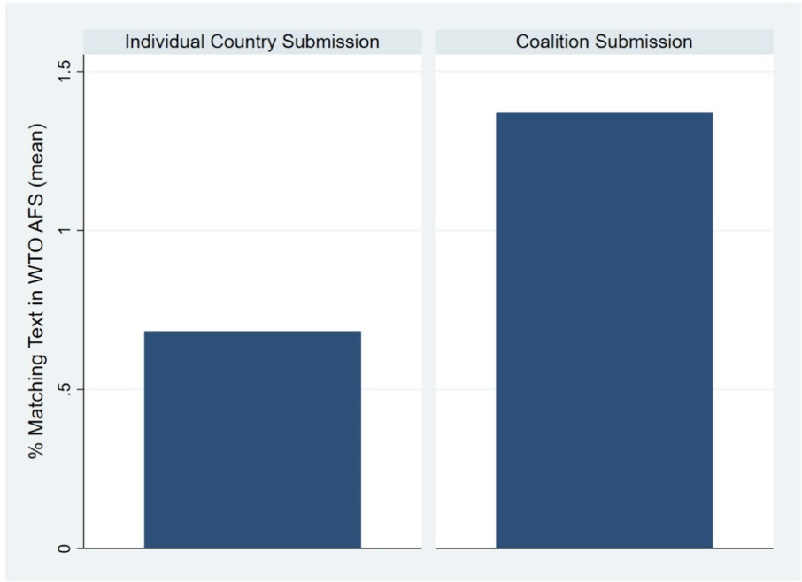
Coalition submissions contributed roughly twice the matching text of individual-country submissions, on average.
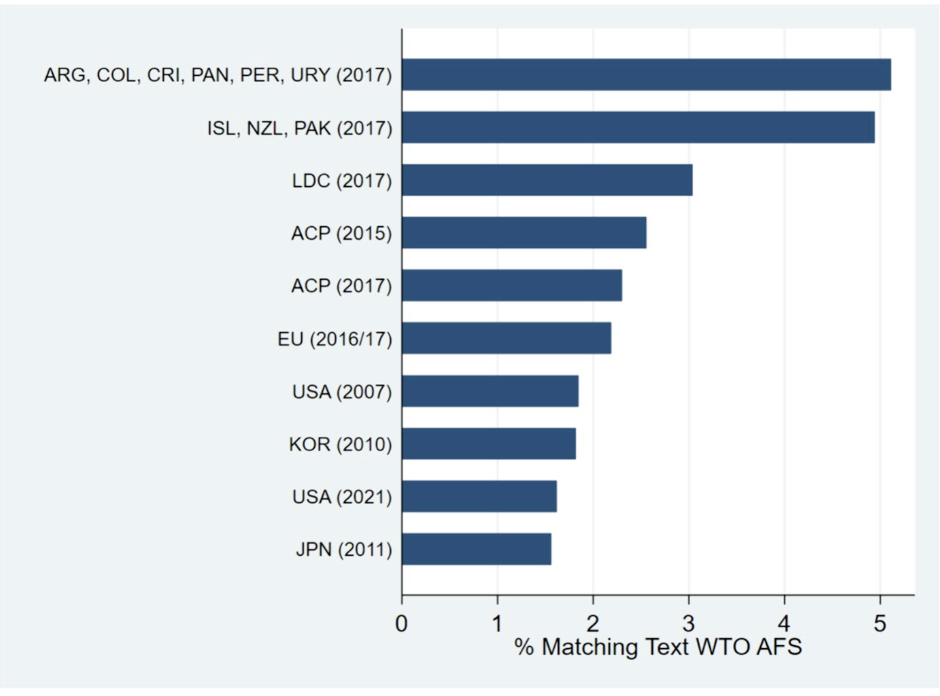
Small-state and developing-country coalitions had higher matching scores than the individual U.S., Japanese, and Korean submissions.
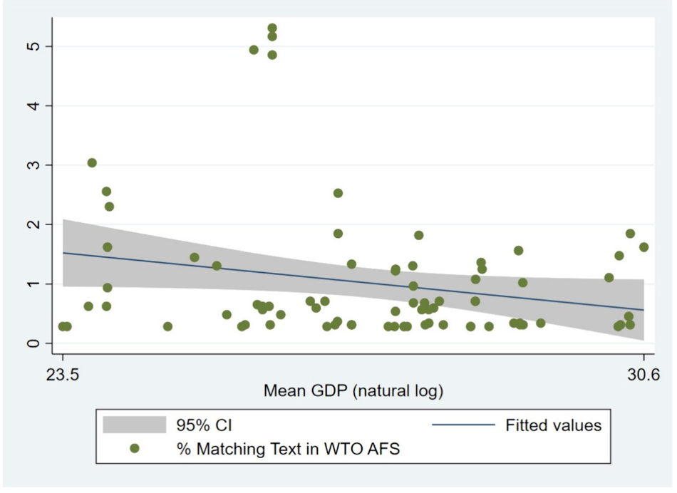
Matching text is weakly negatively correlated with country size.
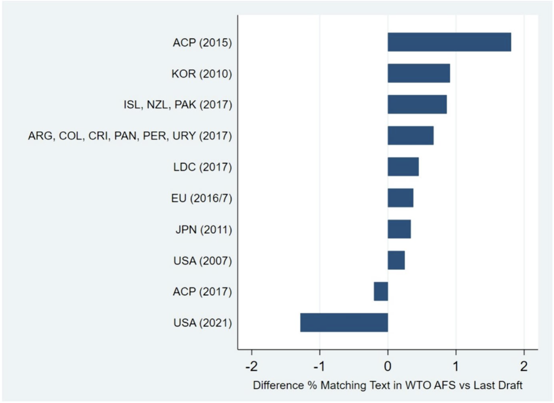
Only about 50% of last draft made it into the final text. Developing coalitions had more text matching to the final text, will the final text was less close to the U.S. submission than the penultimate draft.
Rickard (2025): Discussion Questions
Connecting to today
- The AFS was concluded without needing active U.S. leadership. Can the WTO’s negotiating architecture keep producing agreements as American hegemony declines — or is fisheries subsidies an unusually low-stakes case for the U.S. and others to sit out?
- Could this coalition-based bargaining model be replicated to bring other environmental issues (carbon, plastics, deforestation) into binding trade law? What would have to be true of an issue for that strategy to work again?
Critiquing the Method
- Is one treaty, one issue area enough to generalize about how coalitions shape institutional bargaining?
- Does a text-as-data / textual-similarity design actually measure influence or something else? Does the way we understand textual similarity depend on who is the primary drafter of the accord? Could a country’s language end up in the final text for reasons other than persuasion (independent convergence on similar phrasing; a drafter borrowing efficient language regardless of source)?
Writing & Discussion
Writing & Discussion
Today’s Prompt
Explain how much of the AFS’s passage — the WTO’s first treaty explicitly addressing an environmental problem — owes to structural forces (collective action, hegemonic decline, institutional design) versus agentic factors (coalition strategy, individual negotiating skill — Rickard and Cutler). You don’t have to pick one exclusively — most outcomes involve both — but specify how they interacted, and support your account with specific evidence from at least two of today’s three materials: the chapter, Rickard, and Cutler.
Key Takeaways
- The WTO exists because of a political problem: concentrated, organized producer interests will defeat diffuse consumer interests every time unless governments bind their own hands (Olson)
- Trade negotiation itself is a mixture of the highly political and the highly technical — the same negotiator who is reading domestic coalitions and managing credibility is also mastering tariff-line-level detail (Wendy Cutler describes negotiators assessing cattle age from photographs of cows’ teeth to settle a beef tariff classification)
- Three foundational principles structure the system: market liberalism, nondiscrimination (MFN + national treatment), and special and differential treatment for developing countries
- The legal architecture includes: bound tariffs, safeguards / AD / CVD as escape valves, and a growing reach beyond tariffs into TBT, SPS, GATS, and TRIPS
- Hegemonic stability may have explained the system’s development and durability until recently — but the hegemon is now dissatisfied, and dispute settlement is in crisis (Appellate Body paralyzed since Dec 2019)
- The system is under sustained pressure: Doha stalemate, the explosion of RTAs, and a values clash the WTO was never designed to handle (e.g., forced-labor imports, national security, “trade & issues”)
- These rules made global value chains possible — from Nutella to ASML — producing both marvels and the fragility we now see when the system fractures
Looking Ahead
Next Class (Thursday, July 9): Trade Cooperation
Chapter 3: The Political Economy of International Trade Cooperation
- What does economic theory say about gains from trade?
- Why is trade cooperation difficult to achieve?
- How do institutions help governments cooperate?
Preparation — two readings:
- Oatley, Chapter 3
- The scholarly article posted on Canvas (Reading 2)
Guiding question: If trade benefits everyone in the aggregate, why do governments still fight about it?

INTL 503 | The WTO and the World Trade System